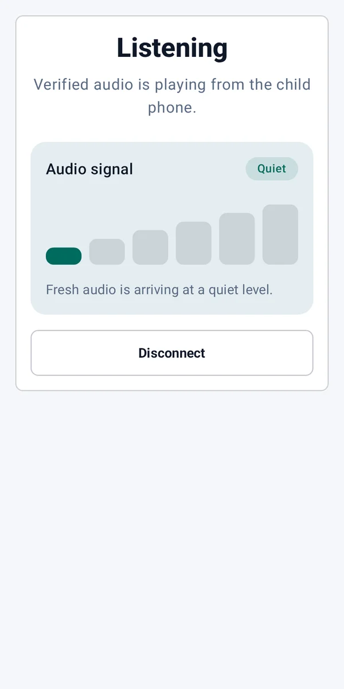

Open Babyphone releases
GitHub releases
Checking GitHub for the latest published build.
Local Android audio monitor
One phone listens nearby. The other plays audio directly over your home Wi-Fi.


For Android 11 and newer
Download the APK from GitHub and review the release notes before installing.
Open Babyphone is not a medical or safety-certified device and does not replace responsible supervision.
GitHub releases
Checking GitHub for the latest published build.
Choose the role for each phone. The child device captures audio, while the parent device plays the authenticated stream.
Read the setup guidePlace this phone near the child to send audio to paired parent devices.
Keep this phone with you to hear audio from the child device.

The six-step signal meter gives a calm, glanceable view of recent audio activity.
Quiet uses cyan. Loud sound uses blue. Text and bar count always reinforce the color.
Open Babyphone keeps its supported connection model simple and inspectable.